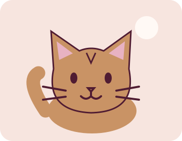
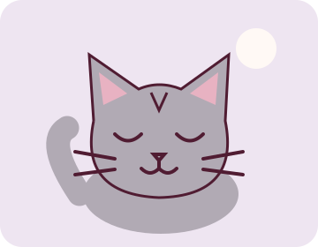
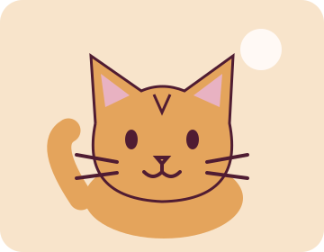

02 / КОТИКИ
Кожні лапки —
свій характер.
Знайомся з трьома вигаданими героями «Мур».
Прочитай їхні історії, подаруй віртуальне погладжування
та знайди свій котячий настрій.
Це персонажі навчального проєкту, а не список мешканців
котокафе чи оголошення про прилаштування.
Перейти до тесту ↓
Наші пухнасті персонажі

МАЙСТЕР ЗАТИШКУ
Мурко
Любить тихі вечори, м’які пледи й місце поруч
із людиною. Не поспішає, коли навколо
стільки можливостей подрімати.
Улюблене місце: тепле підвіконня.
Як подружитися?
Сядь поруч і дозволь йому самому скоротити відстань.

НІЖНА СПОСТЕРІГАЧКА
Хмарка
Спершу уважно спостерігає з безпечного місця.
Коли звикає до компанії, охоче залишається поруч.
Цінує спокій і делікатність.
Улюблене місце: спокійний куточок.
Як подружитися?
Говори тихо та не намагайся одразу взяти її на руки.

ДОСЛІДНИЦЯ ПРИГОД
Іскра
Завжди помічає нову коробку й цікаву іграшку.
Після активної гри із задоволенням
влаштовує собі заслужений відпочинок.
Улюблене місце: картонні коробки.
Як подружитися?
Запропонуй гру з іграшкою та роби перерви.
МОВА КОТИКІВ
Спостерігай.
Не поспішай.
Один жест не пояснює всього: звертай увагу
на загальну поведінку й ситуацію.
Сам підходить
Дай котику обнюхати руку. Рухайся повільно
й залиш йому можливість відійти.
Відходить або ховається
Зроби паузу. Не діставай його зі схованки
й не переслідуй.
Спить
Час відпочинку — не час для знайомства.
Краще поспостерігай здалеку.
ТРИ ПИТАННЯ ДЛЯ УСМІШКИ
Який у тебе котячий настрій?
Обери одну відповідь у кожному питанні.
Це розважальний тест, а не психологічна оцінка.